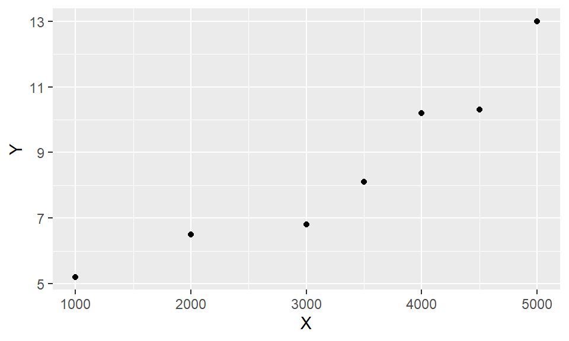
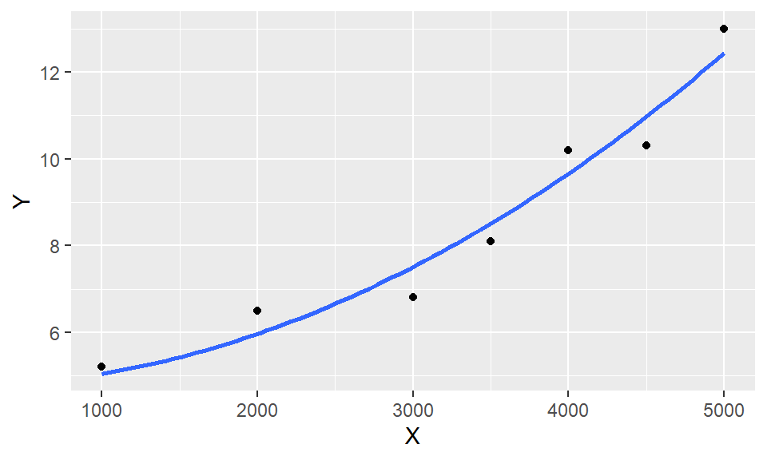

library(haven)
data = read_sav("data\\xt9.2.sav")
head(data)# A tibble: 6 × 2
X Y
<dbl> <dbl>
1 1000 5.2
2 2000 6.5
3 3000 6.8
4 3500 8.1
5 4000 10.2
6 4500 10.3非线性回归
为了研究生产率与废料率之间的关系，记录数据如下表。请画出散点图，并根据散点图的趋势拟合适当的回归模型。
library(haven)
data = read_sav("data\\xt9.2.sav")
head(data)# A tibble: 6 × 2
X Y
<dbl> <dbl>
1 1000 5.2
2 2000 6.5
3 3000 6.8
4 3500 8.1
5 4000 10.2
6 4500 10.3画散点图
library(ggplot2)
(p = ggplot(data, aes(X, Y)) +
geom_point())
拟合二次曲线
model = lm(Y ~ I(X^2), data)
summary(model)
Call:
lm(formula = Y ~ I(X^2), data = data)
Residuals:
1 2 3 4 5 6 7
0.1556 0.5318 -0.7079 -0.4087 0.5365 -0.6723 0.5650
attr(,"format.spss")
[1] "F8.2"
Coefficients:
Estimate Std. Error t value Pr(>|t|)
(Intercept) 4.736e+00 4.482e-01 10.57 0.000131 ***
I(X^2) 3.079e-07 3.022e-08 10.19 0.000156 ***
---
Signif. codes: 0 '***' 0.001 '**' 0.01 '*' 0.05 '.' 0.1 ' ' 1
Residual standard error: 0.6378 on 5 degrees of freedom
Multiple R-squared: 0.954, Adjusted R-squared: 0.9449
F-statistic: 103.8 on 1 and 5 DF, p-value: 0.0001563模型\(R^2=0.954\)，F检验的P值=0.0001563<0.05，回归方程显著，回归系数全部t检验通过。拟合效果较好。
拟合效果展示
p + geom_smooth(method='lm',
formula=y ~ I(x^2),
se=FALSE)